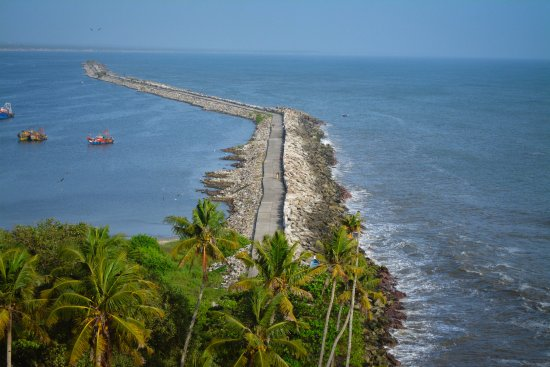
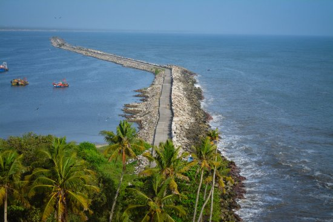
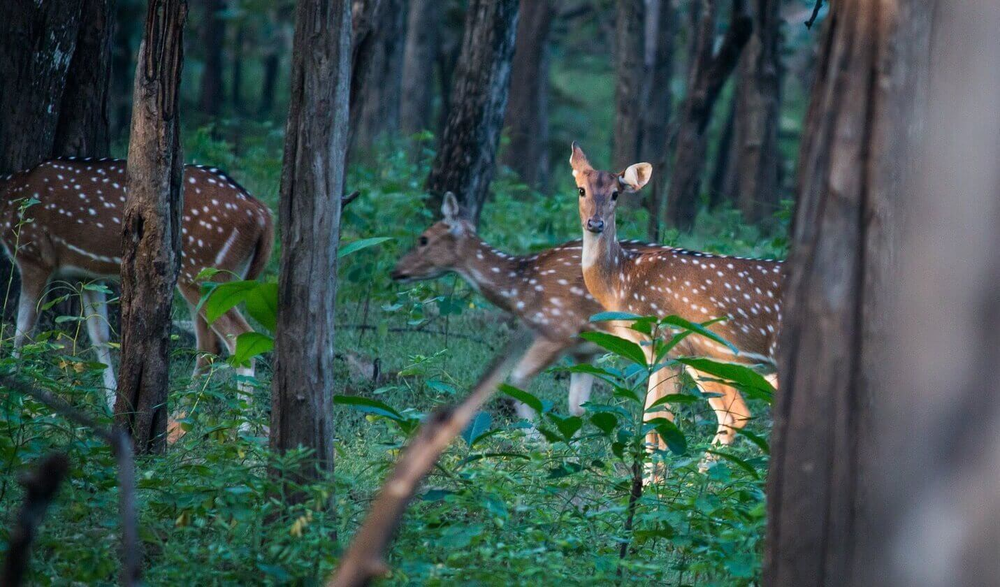
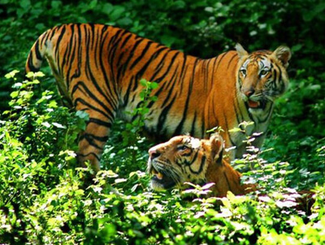
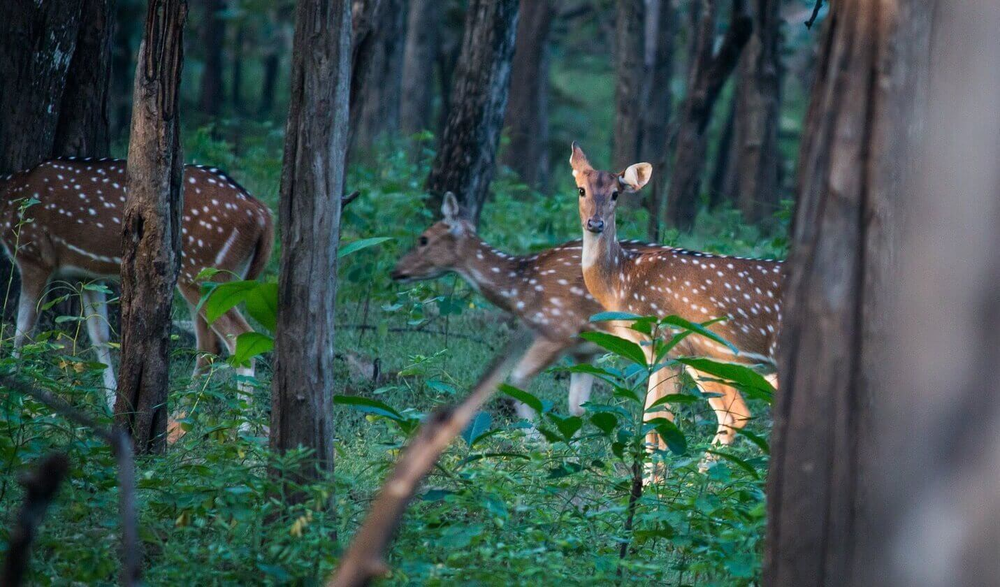
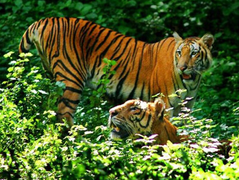
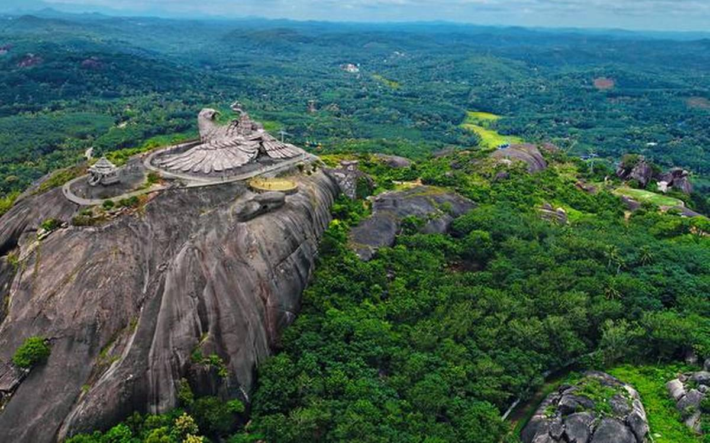
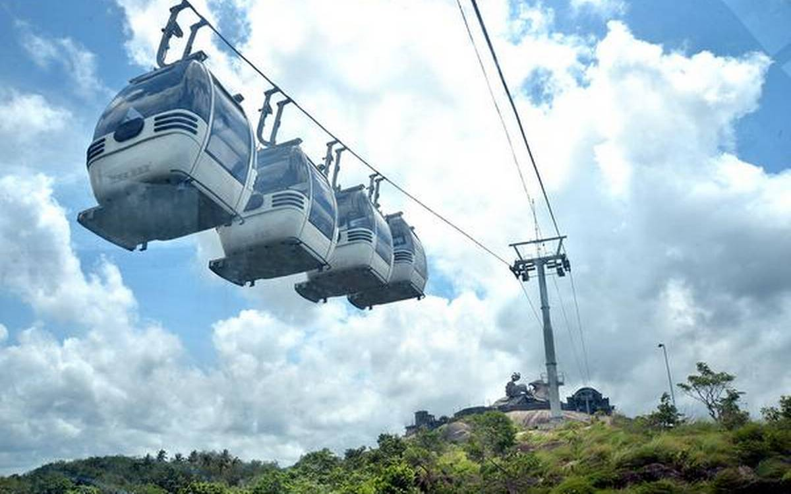
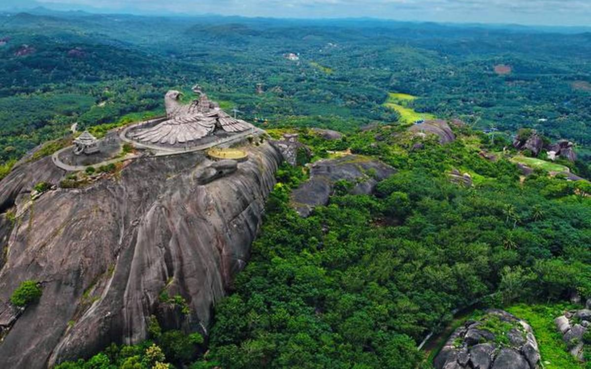
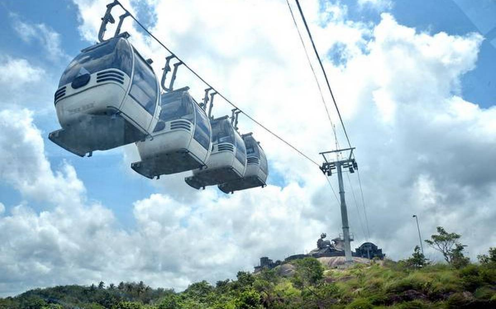

KOLLAM BEACH
With its glorious stretch of golden sand and azure waters, Kollam beach is the quintessential beach destination for travellers. The magnificent Arabian Sea that stretches unendingly to the horizon makes for a beautiful, dreamy sight. Aesthetics apart, this beach has its share of archaic grandeur too. It was once a major centre of trade when it was a busy, active harbour that attracted Chinese ships. You can see remnants of the glorious past in the form of Chinese fishing nets, Chinese water pots, and sampans. The place is important considering the maritime history of Kerala, and once you are here, you can embark on a cultural and historical journey into the past. If, on the other hand, observing and understanding the local lifestyle is your choice, walk along the coast and explore the nearby fishing hamlets for a taste of the present. If entertainment is your priority, Kollam beach is rich in that department too. An array of beach activities are on offer here. The park near the beach offers many thrilling rides for kids. Also known as Mahatma Gandhi Beach, it is frequented by locals and foreigners alike
 


 



 


